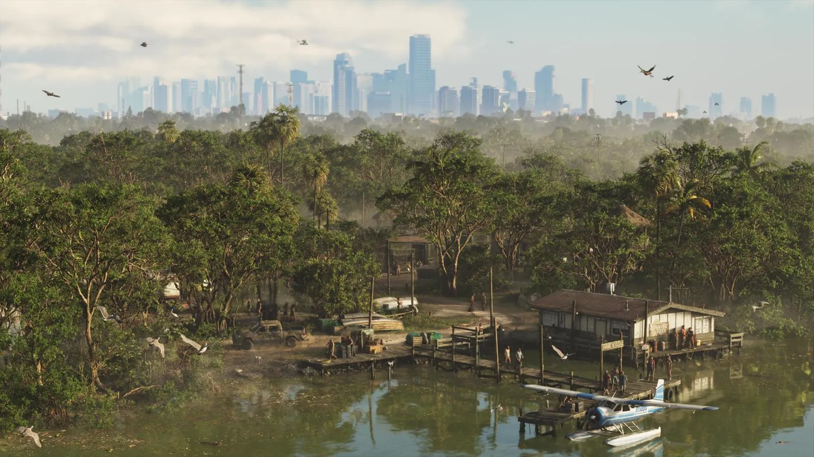
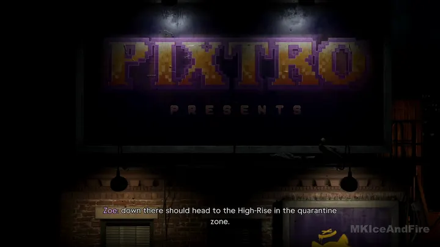
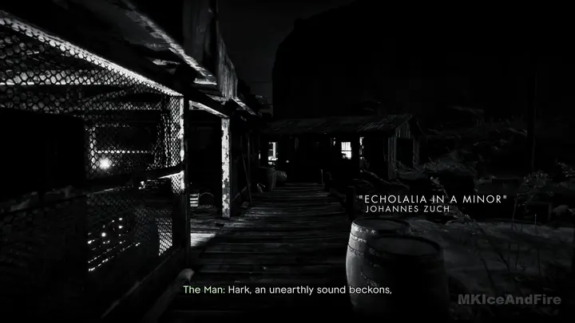
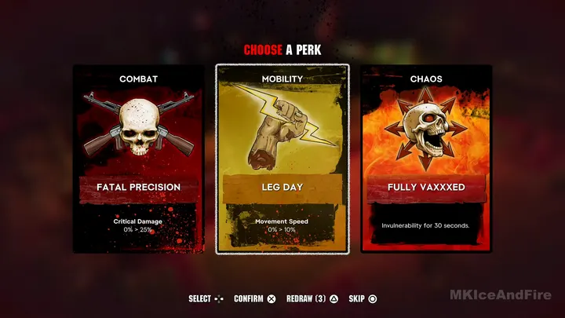

Пасхалки GTA 6: Бигфут, настоящее пасхальное яйцо и другие секреты
Опубликовано:

- Бигфут вернулся — во флоридском варианте Skunk Ape, в болотах. На этот раз он настоящий, а не человек в костюме, как в GTA 5.
- На вершине самой высокой вышки лежит настоящее пасхальное яйцо — его можно бросить.
- В игре есть игры в игре: Tenebrae Lux, Street Trash III и аркада Bang For Your Buck.
- Пишем только то, что подтверждают минимум два источника.
Бигфут, он же Skunk Ape
Бигфут — старейшая легенда серии. В GTA San Andreas его не было вовсе: это был фанатский миф, который годами гулял по форумам. Rockstar ответила на него в GTA 5 — там «бигфутом» оказался человек в костюме. В GTA 6 зверь наконец настоящий.
Через несколько часов после запуска игроки нашли его в болотах Леониды; GameSpot указывает место — Gullet Marsh. Rockstar использовала не классического сасквоча, а его флоридскую версию — Skunk Ape, «вонючую обезьяну» из местных легенд. По данным VGTimes, найти его можно почти сразу после начала свободной игры, а рассмотреть — в фоторежиме. GameSpot добавляет, что пропустить его сложно: с ним связана одна из миссий.
Совпадение? У побочного персонажа Кирка есть цепочка заданий с говорящими названиями Skunk Apeology 101 и Advanced Skunk Apeonomics.
Буквальное пасхальное яйцо
Rockstar пошутила над самим словом «пасхалка». Игрок xGarbett залез на вершину самой высокой вышки связи в Вайс-Сити — подъём занимает около 6–7 минут — и нашёл там гнездо с яйцами, раскрашенными как пасхальные. Одно яйцо можно взять и бросить вниз.
Игры внутри игры
| Игра | Где | Что это |
|---|---|---|
| Tenebrae Lux | телевизор дома (миссия Feng Shui) | чёрно-белая игра от первого лица; пройти нельзя — заканчивается сама |
| Street Trash III | телевизор дома (Feng Shui) | игра с таймером, выиграть нельзя |
| Bang For Your Buck | аркадные автоматы | единственная, которую можно встретить только в аркадах |
| ещё одна | телевизор дома | всего видеоигр 4 — каждую достаточно запустить для 100% |
За прохождение аркадной игры дают трофей Stick Fiddler.
Военная база и танки
На южных островах округа Мариана стоит военная база Mile Zero Air Station. По словам PC Gamer, это самое простое место, чтобы угнать танк, — правда, за проникновение сразу дают высокий розыск. Танки — это ещё и чит Hauners Rhino Tank (все испытания на выживание) и скрытый трофей Challenging Tank.
Что ещё обсуждают
- Гигантский краб-монстр. Kotaku пишет, что кто-то из игроков уже наткнулся на него, но как именно — неясно. Ждём подтверждения.
- Закрытые зоны. Игроки сообщают о недоступных участках карты; что там, Rockstar не говорила. Пока это слухи — не перепечатываем подробности.
- Отсылки к прошлым играм. Названия трофеев и глав отсылают к серии и кино: глава 5 Top of the World, Ma — к финалу фильма «Белая горячка» (1949, наша трактовка), а скрытый трофей In The Beginning… повторяет название первой миссии GTA Vice City.
Эту страницу будем пополнять: игроки находят новые секреты каждый час.
- Skunk Ape — реальная флоридская легенда о волосатом человекообразном существе из болот.
- Слухи про Бигфута в San Andreas оказались неправдой, но Rockstar добавила его в GTA 5 как ответ фанатам — и в GTA 6 сделала уже настоящим.






Частые вопросы
Есть ли Бигфут в GTA 6?
Да: в болотах Леониды живёт Skunk Ape — флоридская версия Бигфута. GameSpot указывает место Gullet Marsh.
Где пасхальное яйцо в GTA 6?
В гнезде на вершине самой высокой вышки связи в Вайс-Сити; подъём занимает 6–7 минут.
Можно ли угнать танк в GTA 6?
Да, проще всего — на военной базе Mile Zero Air Station на южных островах, но розыск будет высоким.
Источники: Kotaku, «Live Updates On GTA 6», 18–19.11.2026; GameSpot, «GTA 6 Has A Hilarious Riff On Easter Eggs» и «GTA 6 Easter Eggs Are Everywhere», 18–19.11.2026; VGTimes, «Players Have Already Found Bigfoot in Grand Theft Auto 6», 19.11.2026; PowerPyx, «Feng Shui», 19.11.2026; GTABase, «100% Completion Guide», 19.11.2026; Push Square (побочные миссии), 19.11.2026; PC Gamer, «GTA 6 map», 19.11.2026.
Каждый день — новости, фишки и секреты GTA 6 за 30 секунд. Подписывайтесь:
YouTubeInstagramTikTok